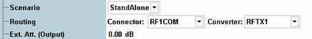
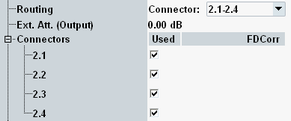

The following parameters are valid irrespective of the generator mode.

This software version supports a standalone scenario and an IQ out scenario. The IQ out scenario is only available, if the instrument is equipped with an I/Q board (possible for some instrument models).
See also "Output Scenarios".
Remote command:Defines the value of an external attenuation (or gain, if the value is negative) in the output path. With an external attenuation of x dB, the power of the generated signal is increased by x dB. The actual generated levels are equal to the displayed values plus the external attenuation.
If a correction table for frequency-dependent attenuation is active for the chosen connector, then the table name and a button are displayed. Press the button to display the table entries.
The parameter is visible only for the standalone scenario.
Remote command:This node is visible if you select a connector bench with several connectors. The availability of connector benches depends on the instrument model.
The node selects which connectors of the bench are active. The generated signal is available at all active connectors. If correction tables for frequency-dependent attenuation are active, they are listed in column "FDCorr".
